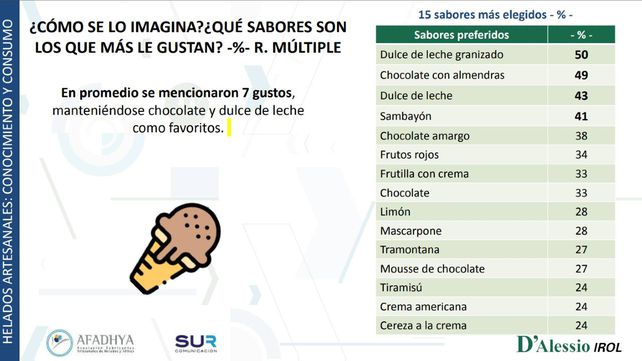

Dulce de leche granizado, el helado preferido de los argentinos.
14:02 hs - Viernes 17 de Septiembre de 2021
El dulce de leche granizado es el sabor de helado preferido por los argentinos. Así lo revela una encuesta encargada por la Asociación de Fabricantes Artesanales de Helado. Luego se ubican el chocolate con almendras y el dulce de leche, a secas. En la consulta hubo siete sabores que se repitieron prácticamente en todas las respuestas.
De acuerdo al relevamiento realizado por D'Alessio Irol International Research OnLine-Latam, los 15 sabores de helado más elegidos por los argentinos son:
Dulce de leche granizado
Chocolate con almendras
Dulce de leche
Sambayón
Chocolate amargo
Frutos rojos
Frutilla con crema
Chocolate
Limón
Mascarpone
Tramontana
Mousse de chocolate
Tiramisú
Crema americana
Cereza a la crema
La encuesta también entregó otros datos relacionados con el consumo de helado.
El contexto de Covid-19 no parece haber impactando en una disminución del deseo de tomar helado. El 89% de los consultados dijo haber consumir helado en la pandemia.
La situación actual genera angustia en el 68% de los encuestados, pero el helado tiene, al menos mientras se toma, la capacidad de mitigarla. Las palabras que se asocian con tomar un helado (“delicioso”, “placer”, “dulzura”) evidencian su asociación con sensaciones agradables, con capacidad para reducir el estrés y la angustia de este momento.
Otros términos que también surgieron, como “cucurucho” y “cremosidad”, parecen remitir a momentos placenteros de la infancia de quienes consumen helado.
De acuerdo a los resultados de la compulsa, todo momento es bueno para tomar un helado, porque mejora el ánimo. Además, las heladerías artesanales aportan más que solo entregar un producto: el valor emocional, de la familiaridad (los consumidores necesitan reconocer en el sabor y la atención lo que siempre encontraron). A lo que hoy se agrega la seguridad del cumplimiento del protocolo Covid-19.
Las promociones son un incentivo para consumir helado, pero en el momento de buscar y elegir quedan en un segundo lugar.
Las características más valoradas al elegir un helado artesanal son:
- 92%, reconocer el sabor de siempre y asegurarse que sus ingredientes son naturales
- 87%, la cremosidad
- 85%, saber que se cumple con el Protocolo de seguridad Covid-19
- 59%, las promociones
La pandemia puso sobre la mesa otras formas de entrega y pedidos en todos los sectores gastronómicos. Si bien el 74% de los encuestados enunció que seguía acudiendo a su heladería más cercana y favorita, el 34% dijo pedirlo por delivery y apps.
La necesidad de brindar una buena atención al cliente es ahora independiente de cómo se efectúe la compra. La atención telefónica y por WhatsApp (75%) ahora es tan importante como la compra en el local (73%).
En esta nota
¿Te gustó la nota?
Relacionadas
- La noche en la que Mau y Ricky probaron el helado y el Carlito de Rosario
- Fuerte repudio al pedido de absolución a los acusados por tragedia de Austral
- Demandó al ginecólogo de toda su vida al descubrir que era su padre biológico